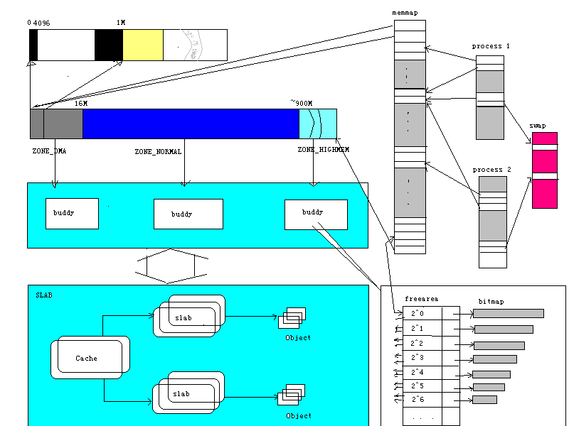

Linux
内存管理子系统导读本文主要针对
2.4的kernel。关于本文的组织：
我的目标是‘导读’，提供linux内存管理子系统的整体概念，同时给出进一步深入研究某个部分时的辅助信息(包括代码组织,文件和主要函数的意义和一些参考文档)。之所以采取这种方式，是因为我本人在阅读代码的过程中，深感“读懂一段代码容易，把握整体思想却极不容易”。而且，在我写一些内核代码时，也觉得很多情况下，不一定非得很具体地理解所有内核代码，往往了解它的接口和整体工作原理就够了。当然，我个人的能力有限，时间也很不够，很多东西也是近期迫于讲座压力临时学的：），内容难免偏颇甚至错误，欢迎大家指正。
这里假定大家对虚拟存储，段页机制有一定的了解。主要强调一些很重要的或者容易误解的概念。
高速缓存(cache) --〉 主存(main memory) ---〉 磁盘(disk)
理解存储层次结构的根源：CPU速度和存储器速度的差距。
层次结构可行的原因：局部性原理。
LINUX
的任务:参考文档：
《too little,too small》by Rik Van Riel, Nov. 27,2000.
以及所有的体系结构教材：）
辅助操作系统进行内存管理，提供虚实地址转换等硬件支持。
逻辑地址：
出现在机器指令中，用来制定操作数的地址。段：偏移线性地址：逻辑地址经过分段单元处理后得到线性地址，这是一个
32位的无符号整数，可用于定位4G个存储单元。物理地址：线性地址经过页表查找后得出物理地址，这个地址将被送到地址总线上指示所要访问的物理内存单元。
LINUX:
尽量避免使用段功能以提高可移植性。如通过使用基址为0的段，使逻辑地址==线性地址。保护模式下的段：选择子
+描述符。不仅仅是一个基地址的原因是为了提供更多的信息：保护、长度限制、类型等。描述符存放在一张表中(GDT或LDT)，选择子可以认为是表的索引。段寄存器中存放的是选择子，在段寄存器装入的同时，描述符中的数据被装入一个不可见的寄存器以便cpu快速访问。（图）P40专用寄存器：GDTR(包含全局描述附表的首地址),LDTR（当前进程的段描述附表首地址）,TSR（指向当前进程的任务状态段）
LINUX
使用的段：__KERNEL_CS
： 内核代码段。范围 0-4G。可读、执行。DPL=0。__KERNEL_DS
：内核代码段。范围 0-4G。可读、写。DPL=0。__USER_CS
：内核代码段。范围 0-4G。可读、执行。DPL=3。__USER_DS
：内核代码段。范围 0-4G。可读、写。DPL=3。TSS(
任务状态段)：存储进程的硬件上下文，进程切换时使用。（因为x86硬件对TSS有一定支持，所有有这个特殊的段和相应的专用寄存器。）default_ldt
：理论上每个进程都可以同时使用很多段，这些段可以存储在自己的ldt段中，但实际linux极少利用x86的这些功能，多数情况下所有进程共享这个段，它只包含一个空描述符。还有一些特殊的段用在电源管理等代码中。
（在2.2以前，每个进程的ldt和TSS段都存在GDT中，而GDT最多只能有8192项，因此整个系统的进程总数被限制在4090左右。2。4里不再把它们存在GDT中，从而取消了这个限制。）
__USER_CS
和__USER_DS段都是被所有在用户态下的进程共享的。注意不要把这个共享和进程空间的共享混淆：虽然大家使用同一个段，但通过使用不同的页表由分页机制保证了进程空间仍然是独立的。x86
硬件支持两级页表，奔腾pro以上的型号还支持Physical address Extension Mode和三级页表。所谓的硬件支持包括一些特殊寄存器(cr0-cr4)、以及CPU能够识别页表项中的一些标志位并根据访问情况做出反应等等。如读写Present位为0的页或者写Read/Write位为0的页将引起CPU发出page fault异常，访问完页面后自动设置accessed位等。linux
采用的是一个体系结构无关的三级页表模型（如图），使用一系列的宏来掩盖各种平台的细节。例如，通过把PMD看作只有一项的表并存储在pgd表项中（通常pgd表项中存放的应该是pmd表的首地址），页表的中间目录(pmd)被巧妙地‘折叠’到页表的全局目录(pgd)，从而适应了二级页表硬件。
6. TLB
TLB
全称是Translation Look-aside Buffer,用来加速页表查找。这里关键的一点是：如果操作系统更改了页表内容，它必须相应的刷新TLB以使CPU不误用过时的表项。7. Cache
Cache
基本上是对程序员透明的，但是不同的使用方法可以导致大不相同的性能。linux有许多关键的地方对代码做了精心优化，其中很多就是为了减少对cache不必要的污染。如把只有出错情况下用到的代码放到.fixup section，把频繁同时使用的数据集中到一个cache行（如struct task_struct），减少一些函数的footprint，在slab分配器里头的slab coloring等。另外，我们也必须知道什么时候cache要无效：新map/remap一页到某个地址、页面换出、页保护改变、进程切换等，也即当cache对应的那个地址的内容或含义有所变化时。当然，很多情况下不需要无效整个cache，只需要无效某个地址或地址范围即可。实际上，
intel
在这方面做得非常好用，cache的一致性完全由硬件维护。8
． Linux 相关实现这一部分的代码和体系结构紧密相关，因此大多位于arch子目录下，而且大量以宏定义和inline函数形式存在于头文件中。以i386平台为例，主要的文件包括：
页大小、页掩码定义。PAGE_SIZE,PAGE_SHIFT和PAGE_MASK。
对页的操作，如清除页内容clear_page、拷贝页copy_page、页对齐page_align
还有内核虚地址的起始点：著名的PAGE_OFFSET:)和相关的内核中虚实地址转换的宏__pa和__va.。
virt_to_page
从一个内核虚地址得到该页的描述结构struct page *.我们知道，所有物理内存都由一个memmap数组来描述。这个宏就是计算给定地址的物理页在这个数组中的位置。另外这个文件也定义了一个简单的宏检查一个页是不是合法：VALID_PAGE(page)。如果page离memmap数组的开始太远以至于超过了最大物理页面应有的距离则是不合法的。比较奇怪的是页表项的定义也放在这里。pgd_t,pmd_t,pte_t和存取它们值的宏xxx_val
[pte/pmd/pgd]_ERROR
出措时要打印项的取值，64位和32位当然不一样。set_[pte/pmd/pgd]
设置表项值pte_same
比较 pte_page 从pte得出所在的memmap位置pte_none
是否为空。__mk_pte
构造ptepgtable.h
的宏太多，不再一一解释。实际上也比较直观，通常从名字就可以看出宏的意义来了。pte_xxx宏的参数是pte_t,而ptep_xxx的参数是pte_t *。2.4 kernel在代码的clean up方面还是作了一些努力，不少地方含糊的名字变明确了，有些函数的可读性页变好了。pgtable.h
里除了页表操作的宏外，还有cache和tlb刷新操作，这也比较合理，因为他们常常是在页表操作时使用。这里的tlb操作是以__开始的，也就是说，内部使用的，真正对外接口在pgalloc.h中（这样分开可能是因为在SMP版本中，tlb的刷新函数和单机版本区别较大，有些不再是内嵌函数和宏了）。8.3 pgalloc.h
包括页表项的分配和释放宏/函数,值得注意的是表项高速缓存的使用：
pgd/pmd/pte_quicklist
内核中有许多地方使用类似的技巧来减少对内存分配函数的调用，加速频繁使用的分配。如buffer cache中buffer_head和buffer，vm区域中最近使用的区域。
还有上面提到的tlb刷新的接口
8.4 segment.h
定义 __KERNEL_CS[DS] __USER_CS[DS]
参考：
《
2.4
中内存管理有很大的变化。在物理页面管理上实现了基于区的伙伴系统（zone based buddy system）。区(zone)的是根据内存的不同使用类型划分的。对不同区的内存使用单独的伙伴系统(buddy system)管理,而且独立地监控空闲页等。(
实际上更高一层还有numa支持。Numa(None Uniformed Memory Access)是一种体系结构，其中对系统里的每个处理器来说,不同的内存区域可能有不同的存取时间(一般是由内存和处理器的距离决定)。而一般的机器中内存叫做DRAM，即动态随机存取存储器，对每个单元，CPU用起来是一样快的。NUMA中访问速度相同的一个内存区域称为一个Node，支持这种结构的主要任务就是要尽量减少Node之间的通信，使得每个处理器要用到的数据尽可能放在对它来说最快的Node中。2.4内核中node�相应的数据结构是pg_data_t，每个node拥有自己的memmap数组，把自己的内存分成几个zone，每个zone再用独立的伙伴系统管理物理页面。Numa要对付的问题还有很多，也远没有完善，就不多说了)一些重要的数据结构粗略地表示如下：

内存分配的两大问题是：分配效率、碎片问题。一个好的分配器应该能够快速的满足各种大小的分配要求，同时不能产生大量的碎片浪费空间。伙伴系统是一个常用的比较好的算法。(解释：TODO)
引入区的概念是为了区分内存的不同使用类型（方法？），以便更有效地利用它们。
2.4
有三个区：DMA, Normal, HighMem。前两个在2.2实际上也是由独立的buddy system管理的，但2.2中还没有明确的zone的概念。DMA区在x86体系结构中通常是小于16兆的物理内存区，因为DMA控制器只能使用这一段的内存。而HighMem是物理地址超过某个值(通常是约900M)的高端内存。其他的是Normal区内存。由于linux实现的原因，高地址的内存不能直接被内核使用，如果选择了CONFIG_HIGHMEM选项，内核会使用一种特殊的办法来使用它们。（解释：TODO）。HighMem只用于page cache和用户进程。这样分开之后，我们将可以更有针对性地使用内存，而不至于出现把DMA可用的内存大量给无关的用户进程使用导致驱动程序没法得到足够的DMA内存等情况。此外，每个区都独立地监控本区内存的使用情况，分配时系统会判断从哪个区分配比较合算，综合考虑用户的要求和系统现状。2.4里分配页面时可能会和高层的VM代码交互(分配时根据空闲页面的情况，内核可能从伙伴系统里分配页面，也可能直接把已经分配的页收回�reclaim等)，代码比2.2复杂了不少，要全面地理解它得熟悉整个VM工作的机理。整个分配器的主要接口是如下函数(mm.h page_alloc.c)：
关于Buddy算法，许多教科书上有详细的描述，<Understanding the Linux Kernel>第六章对linux的实现有一个很好的介绍。关于zone base buddy更多的信息，可以参见Rik Van Riel 写的" design for a zone based memory allocator"。这个人是目前linuxmm的维护者，权威啦。这篇文章有一点过时了，98年写的，当时还没有HighMem，但思想还是有效的。还有，下面这篇文章分析2.4的实现代码：
http://home.earthlink.net/~jknapka/linux-mm/zonealloc.html
。
2. Slab--
连续物理区域管理单单分配页面的分配器肯定是不能满足要求的。内核中大量使用各种数据结构，大小从几个字节到几十上百k不等，都取整到2的幂次个页面那是完全不现实的。2.0的内核的解决方法是提供大小为2,4,8,16,...,131056字节的内存区域。需要新的内存区域时，内核从伙伴系统申请页面，把它们划分成一个个区域，取一个来满足需求；如果某个页面中的内存区域都释放了，页面就交回到伙伴系统。这样做的效率不高。有许多地方可以改进：
2.2
实现的slab分配器体现了这些改进思想。主要数据结构
接口：
kmem_cache_create/kmem_cache_destory
kmem_cache_grow/kmem_cache_reap
增长/缩减某类缓存的大小kmem_cache_alloc/kmem_cache_free
从某类缓存分配/释放一个对象kmalloc/kfree
通用缓存的分配、释放函数。相关代码
(slab.c)。相关参考：
http://www.lisoleg.net/lisoleg/memory/slab.pdf
：Slab发明者的论文，必读经典。<Understanding the Linux Kernel>
第六章，具体实现的详细清晰的描述。AKA2000
年的讲座也有一些大虾讲过这个主题，请访问aka主页：www.aka.org.cn3
．vmalloc/vfree �物理地址不连续，虚地址连续的内存管理使用kernel页表。文件vmalloc.c，相对简单。
三、
2.4内核的VM(完善中。。。)创建，销毁。
mm_struct, vm_area_struct, mmap/mprotect/munmap
page fault
处理，demand page, copy on write相关文件：
include/linux/mm.h
：struct page结构的定义，page的标志位定义以及存取操作宏定义。struct vm_area_struct定义。mm子系统的函数原型说明。include/linux/mman.h:
和vm_area_struct的操作mmap/mprotect/munmap相关的常量宏定义。memory.c
：page fault处理，包括COW和demand page等。对一个区域的页表相关操作:
zeromap_page_range:
把一个范围内的页全部映射到zero_pageremap_page_range
：给定范围的页重新映射到另一块地址空间。zap_page_range
：把给定范围内的用户页释放掉，页表清零。mlock.c
： mlock/munlock系统调用。mlock把页面锁定在物理内存中。mmap.c:
：mmap/munmap/brk系统调用。mprotect.c
： mprotect系统调用。前面三个文件都大量涉及
vm_area_struct的操作，有很多相似的xxx_fixup的代码，它们的任务是修补受到影响的区域，保证vm_area_struct 链表正确。目的：
任务：
kswapd
内核线程：每10秒激活一次任务：当空闲页面低于一定值时，从进程的地址空间、各类cache回收页面
为什么不能等到内存分配失败再用try_to_free_pages回收页面？原因：
kreclaimd
从inactive_clean_list回收页面，由__alloc_pages唤醒。相关文件：
mm/swap.c kswapd
使用的各种参数以及操作页面年龄的函数。mm/swap_file.c
交换分区/文件的操作。mm/page_io.c
读或写一个交换页。mm/swap_state.c swap cache
相关操作,加入/删除/查找一个swap cache等。mm/vmscan.c
扫描进程的vm_area，试图换出一些页面（kswapd）。reclaim_page
：从inactive_clean_list回收一个页面，放到free_listkclaimd
被唤醒后重复调用reclaim_page直到每个区的zone->free_pages>= zone->pages_low
page_lauder
：由__alloc_pages和try_to_free_pages等调用。通常是由于freepages + inactive_clean_list的页太少了。功能：把inactive_dirty_list的页面转移到inactive_clean_list，首先把已经被写回文件或者交换区的页面(by bdflush)放到inactive_clean_list，如果freepages确实短缺，唤醒bdflush，再循环一遍把一定数量的dirty页写回。关于这几个队列(active_list,inactive_dirty_list,inactive_clean_list)的逻辑，请参照：文档：RFC: design for new VM，可以从lisoleg的文档精华获得。
,
page cache
buffer cache
：读写磁盘块的时候磁盘块内容的cache，buffer cache的内容对应磁盘上一个连续的区域，一个buffer cache大小可能从512(扇区大小)到一个页。swap cache
： 是page cache的子集。用于多个进程共享的页面被换出到交换区的情况。本质上是很不同的，buffer cache缓冲磁盘块内容，page cache缓冲文件的一页内容。page cache写回时会使用临时的buffer cache来写磁盘。
bdflush
： 把dirty的buffer cache写回磁盘。通常只当dirty的buffer太多或者需要更多的buffer而内存开始不足时运行。page_lauder也可能唤醒它。kupdate
： 定时运行，把写回期限已经到了的dirty buffer写回磁盘。2.4
的改进：page cache和buffer cache耦合得更好了。在2.2里，磁盘文件的读使用page cache，而写绕过page cache，直接使用buffer cache，因此带来了同步的问题：写完之后必须使用update_vm_cache()更新可能有的page cache。2.4中page cache做了比较大的改进，文件可以通过page cache直接写了，page cache优先使用high memory。而且，2.4引入了新的对象：file address space，它包含用来读写一整页数据的方法。这些方法考虑到了inode的更新、page cache处理和临时buffer的使用。page cache和buffer cache的同步问题就消除了。原来使用inode+offset查找page cache变成通过file address space+offset；原来struct page 中的inode成员被address_space类型的mapping成员取代。这个改进还使得匿名内存的共享成为可能（这个在2.2很难实现，许多讨论过）。
4.
虚存系统则从freeBSD借鉴了很多经验，针对2.2的问题作了巨大的调整。文档：
RFC: design for new VM不可不读。由于时间仓促，新vm的很多细微之处我也还没来得及搞清楚。先大致罗列一下，以后我将进一步完善本文，争取把问题说清楚。另外，等这学期考试过后，我希望能为大家提供一些详细注释过的源代码。
Lisoleg
收集了一些内存管理方面的文档和链接，大家可以看一看。http://www.lisoleg.net/lisoleg/memory/index.html